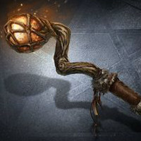
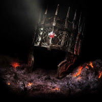
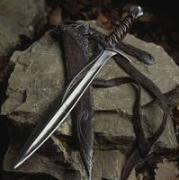
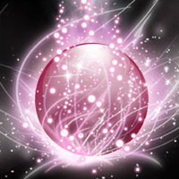

You pull yourself up, stand up, and dust yourself off. When you peer back over the ledge, it's then that you notice the darkness in the chasm moving. MOVING?!?! Shit, something is down there. The door to the room finally collapses between the assault of the soldiers as they come charging in to the room, just in time to meet the horror that is clambering out of the chasm. The beast is about the size of a bear, although it looks similar to a wolf. The main differnce being the tangle of tentacles lurching out from it's back to snatch the terrified guards, who weren't as lucky to have found such safety high above as you now find yourself. Amidst the screams, you turn to find four pedastals. AGAIN THE FOUR CHOICES, you think to yourself. Each pedastal holds a different object, obviously meant for you to take one. Or if you're lucky, and quick, all four. But let's not put the cart before the horse. With the screams below slowly quieting, you know it's only a matter of time before the creature turns its focus to you, so you pick up:




The Oaken Staff
The Cursed Crown
The Bastard Sword
The Swirling Orb
You pick up the Oaken Staff, certain that the ornate gem affixed to the top of the gnarled wood will possess the magical powers that you have sought for all these years. You grip the staff and yes, you can feel the power surge through you. This is the power that you have craved. As you lift the staff above your head, the tentacled beast begins to clambor up on to the landing you stand on, eyes ablaze and mouth open in hunger. You take the staff and point it at the beast, directing all the power you feel directly at the beast. You see the beast flinch back at the sight of the surging, glowing gem. Then a moment passes, and nothing happens. It seems that both yourself and the beast realize at the same time, in your very incapable hands, with no idea how to use the staff, you're simply holding a very expensive looking staff. Your eyes widen as the beast begins to slowly move toward you, frothing at the mouth. You have to almost laugh at yourself, what else did you expect? You know nothing of magic, nor how to wield it, and you especially have no idea how to slay a monstrous beast with it. In the end, as the beast is closing it's mouth around your head, you realize you've at least provided it with a nice toothpick to pick it's teeth clean of you after its meal.
You grab the crown from the pedastal, and lifting it above your head, slowly bring it down to rest upon your brow. It fits as if it were crafted for you. You feel an energy surge through you, a power overwhelming, and you let out a laugh. You don't even notice the tentacled beast climbing up over the ledge, and it takes you a moment to pull yourself back from pure exhultation in finding the artifact you had been searching for for years. The creature affixes it's glowing eyes on you, and you see it lower itself, the hackles on it's back standing straight up, tentacles writhing, and you realize that it's poised itself to charge at you. Not knowing why, you hold out your arms to either side, feeling as if something was compelling you to do so. With that, a gray mist begins to swirl around both of your hands. To your right, the mist forms in to a large, jagged black blade. A truly vicious looking thing. In the other, the mist forms a round, skull covered shield, half the size of a man, and thick as a carraige wheel. Armed, you assume a battle stance, readying yourself for the beast's charge...
The gleaming sword rests on the pedastal before you in all its glory, but you only have a moment to marvel at it, as you can hear the beast approaching behind you, it's claws scraping along the floor. Hoping to take advantage of the element of surprise and catch the beast off guard, you grab the hilt of the sword and bring it over head in an arc and then down hard, gripping the hilt with a second hand as you do in a practiced move to add strength. The maneuver should have cleaved the beasts head wide open. You realize too late, that the sword, for all its craftsmanship, felt too light, unbalanced. As you stare down at your grip, holding the hilt, and only the hilt, of this sword firmly, it occurs to you that this sword has one major flaw, that being that it seems to have been broken in to several pieces, and the piece you happened to be holding, for all intents and purpose, was a beautifully carved paper weight, but left something to be desired as swords go. Not that you'd have much use for one anymore anyway, seeing as you no longer had arms with which to wield one. The beast had relieved you of those burdensome things. It seems it had done the same courtesy for your legs, and as you lie there helpless, was graciously preparing to assist you with the hassle of carrying the weight of your head around all the time as well.
You're drawn to the orb, and you walk with purpose to claim your prize. As you grab the orb, the beast appears from the darkness behind you. It regards you for a moment, its eyes darting to the orb, and then it flees back in to the darkness. Even this beast fears the power you now wield. Holding the orb, you feel the power surge through you. You've never experienced a sensation like this, your body rippling with raw energy. You let loose a strong, bold laugh. Your power will be unstoppable. Truly unstoppable. You realize, your skin burns from the energy. Wait, this power is too unstoppable. The power you felt begins to turn to pain. It hurts. How do you stop it? You feel a liquid running down your chin, but you don't remember drinking anything. It's hard to think, the pain becoming disorienting. You bring your hands to your mouth only to realize with horror your teeth have turned to liquid and now leak out of your mouth. This power, it's too much. You don't know how to harness it. Your veins begin to explode, little sparks erupting from your limbs. Your legs give out. You begin to lose your sight, your eyes melting from within their sockets. You writhe on the ground. Delirious with pain, the only thing you do feel is hungry, as all of the sudden, something smells delicious. Like cooked meat.